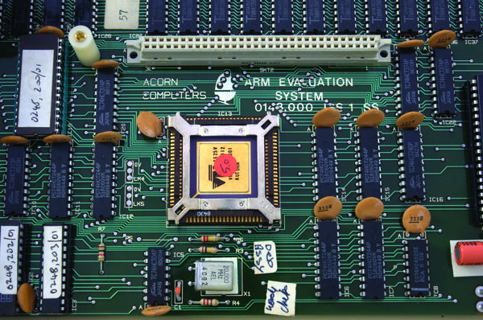

Not every technological genius has the profile of Apple's Steve Jobs or Tim Berners-Lee, the inventor of the World Wide Web. But that doesn't make their contributions any less profound. Sophie Wilson is a case in point. There is little doubt that Wilson's groundbreaking work has given her a rightful place among the seminal architects of the modern computer-driven world.
Invetion
The ARM processor has transformed computing, especially in handheld devices such as smartphones, by enabling maximum processing speed and simplified task management with low power consumption.
The invention in a nutshell
Prior to the invention of the ARM chip, computer processors required a large number of complex instructions to complete tasks. Not only did this make task management difficult, it also required a whopping 135,000 transistors per processor, causing computer chips to suck up large amounts of energy.
Wilson drew on an idea called Reduced Instruction Set Computing, or RISC, which was being developed by IBM at the time. She completely rewrote the operating instruction set for her new chip, reducing the number and complexity of instructions needed to make it work. This simplification also allowed her to reduce the number of transistors on each chip to about 25,000, dramatically slashing energy consumption..
Societal benefit
Found in 95% of the world's smartphones and a large percentage of other electronic goods, ARM chips not only maximise the performance of these devices, they also minimise the power required to operate them. The result: fast, smooth performance, long battery life, and cheaper running costs.
Economic benefit
Over 7 billion ARM cores are sold every year, and this number is likely to increase significantly as Microsoft’s new Windows RT operating system – designed for use with portable devices like tablets – gains popularity in the PC market. To date, Sophie Wilson’s ARM processor has generated revenues of over $30 billion.